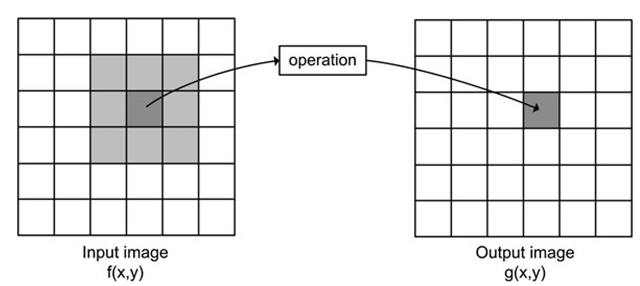
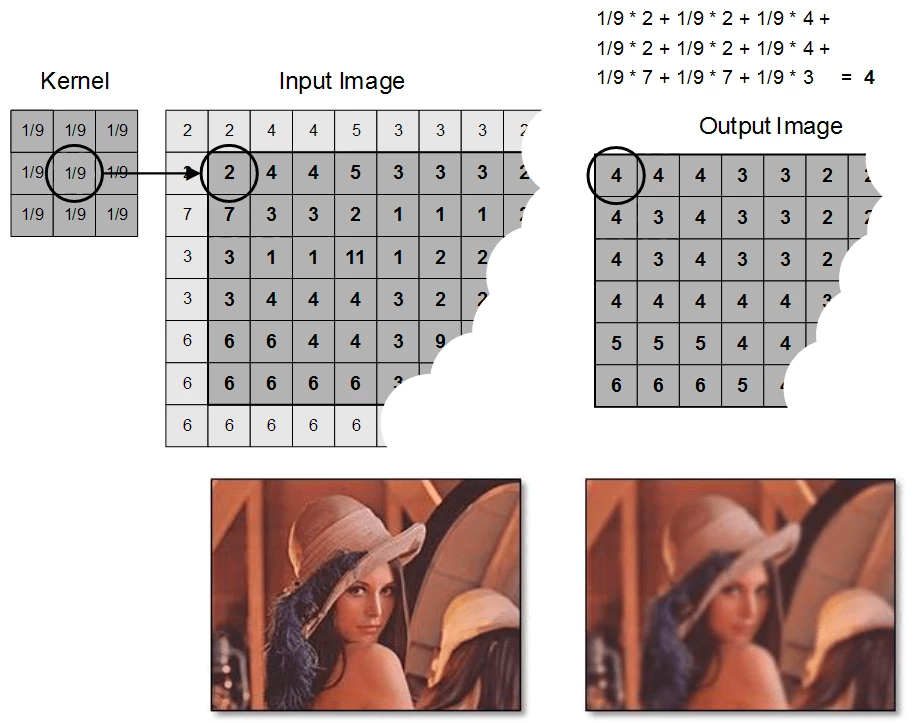

You are given with the 2D array and a curried filtering function of the following format filter:
Array[Array[Int]] => (Int, Int) => Int which accept a datasource and the cell address for
which the filter should be applied
In our scenario, the filter is window function of size NxN which takes works with
the surrounded elements around the cell.

For example, the window function implementation may look like the following:
source => (row, coll) => {
if (row - 1 < 0 || coll - 1 < 0 || row + 1 >= source.length || coll + 1 >= source(0).length) {
0
} else {
(for (i <- row - 1 to row + 1) yield (for (j <- coll - 1 to coll + 1) yield source(i)(j)).sum).sum / 9
}
}
Note, that the function above is applicable for the window of size 3x3, hence the 1 and last rows and cell will be zeroed
Hence, by applying such a filtering function we will get the following result:

Your task is to write a transformation of the whole dataset by applying the given filter function to every cell. Apart from that, the transformation should happen in the parallel fashion to ensure the shortest processing time